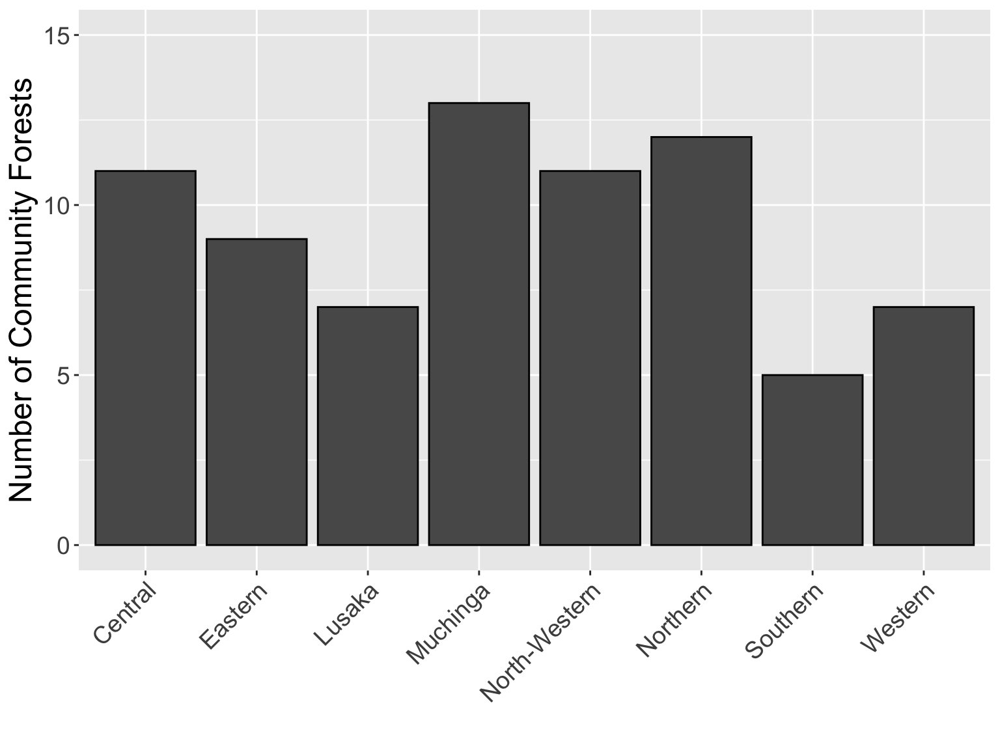
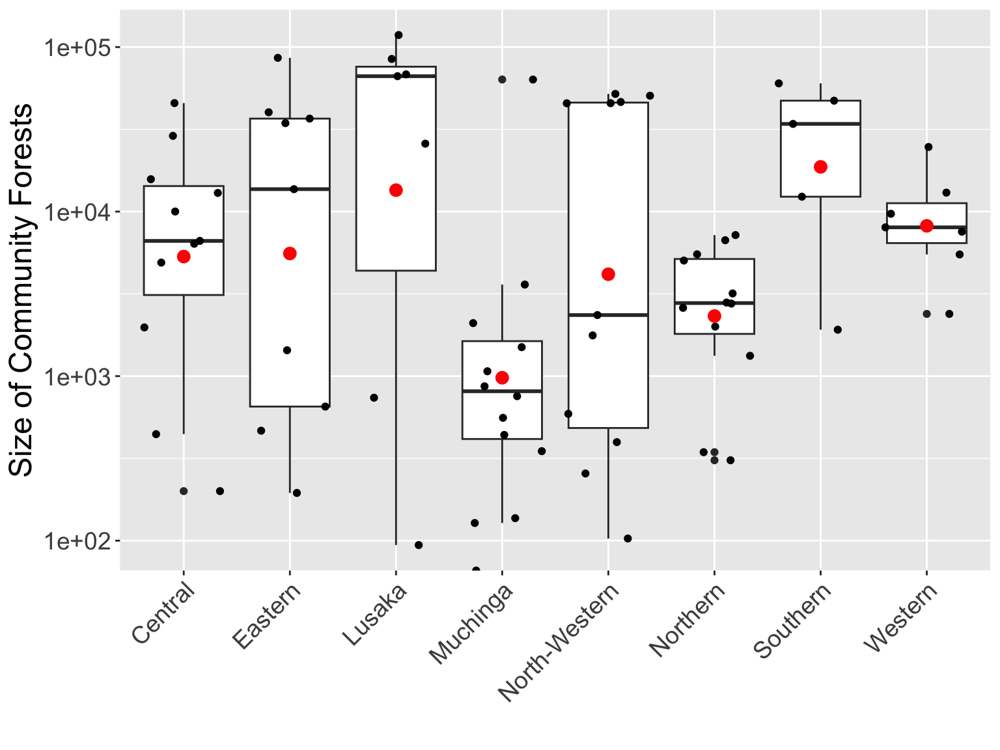
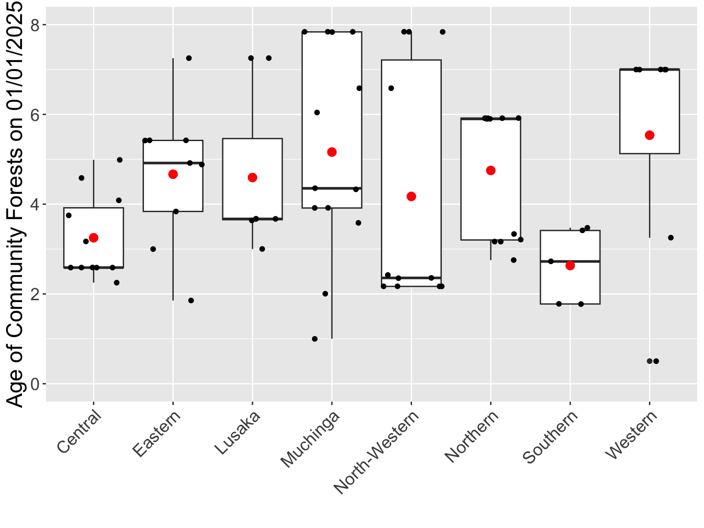
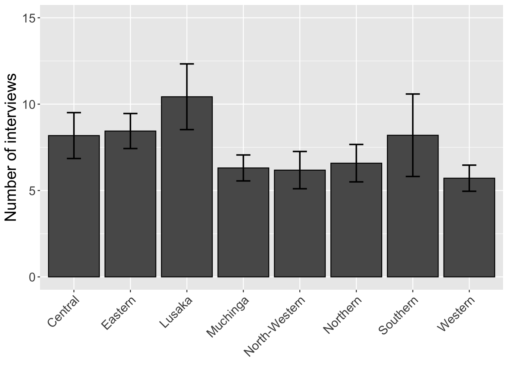
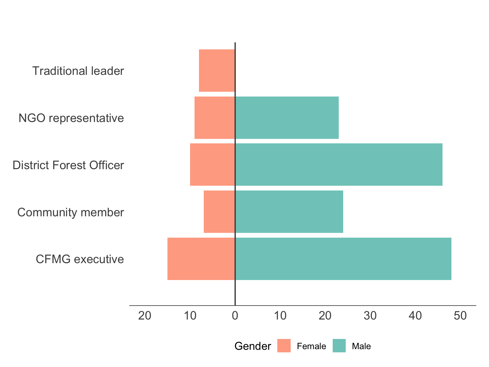
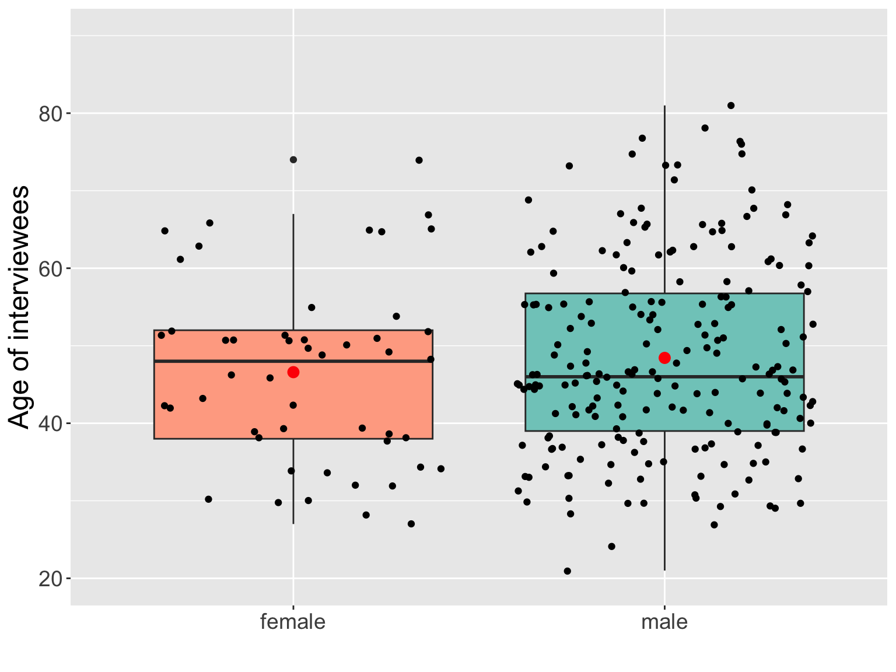
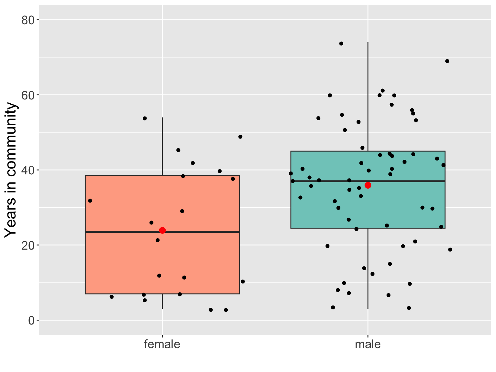
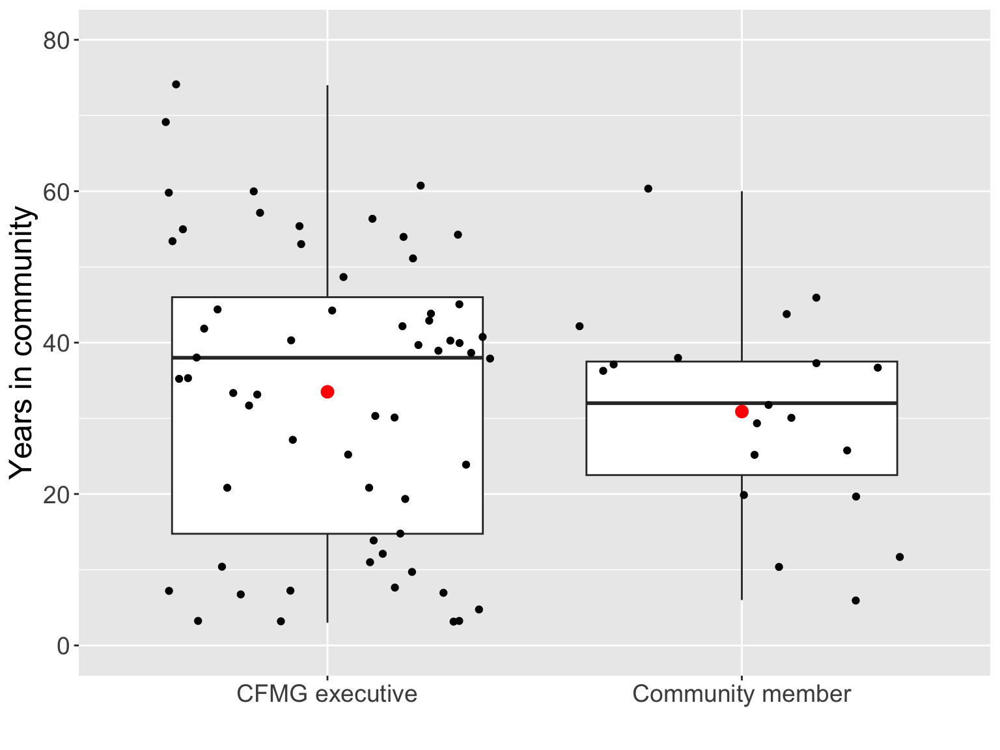
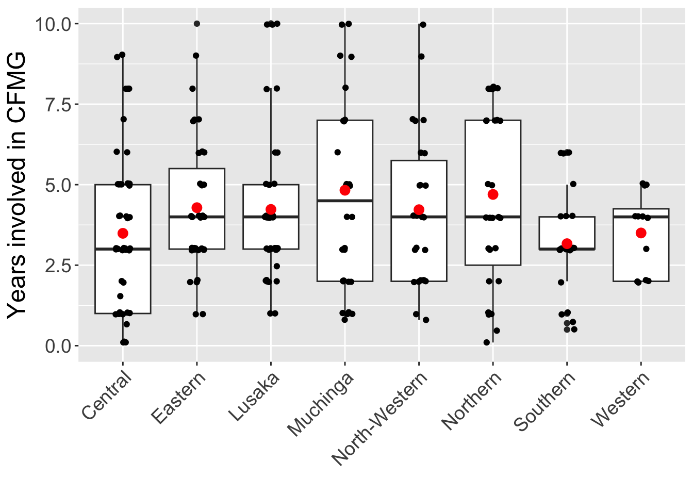

| FDG type | Obs |
|---|---|
| CFMG Executive | 75 |
| Community - Female | 76 |
| Community - Male | 72 |
| Community - Youth | 69 |
CFMG Backgroud
Overview of survey data
Community Forests
The sampling protocol initially targeted 80 community forests (CF) across eight provinces. However, some provinces had very few CFs and hence we selected up to 12 CFs from provinces with more. In addition, occasionally we were unable to survey a CF when Community Forest Management Group (CFMG) members were not available.
Number of Community Forests surveyed
The final sample included 75 CFs. The numbers per province are given in Figure 1.

Size of community forests surveyed
The CFs surveyed range widely in size from less than 100 ha to over 10,000 ha (Figure 2).

Age of community forests
The regulations enabling the formation of community forests were approved in 2018. Hence, the oldest CFs are approximately 8 yrs. However, most are less than 3 yrs. We randomly selected CFs from among those that were at least 1 yr old in Jan 2024 (Figure 3). However, the data on Establishment Date has some errors, so some CFs appear younger.

Interviews
Number of interviews
A total of 549 interviews across 75 Community Forest Management Groups (CFMGs) were surveyed across the eight provinces. The number of interviews per CFMG varied from six to 14 (Figure 4).

In every CFMG, we aimed to hold four Focal Group Discussions (FDGs) with the (i) CFMG Executive, (ii) Community members - male, (iii) Community members - female, and (iv) Community members - youth. Below (Table 1) are the total numbers of the different categories of FDG we were able to conduct. As can be seen, we were unable to arrange FGDs for community males and youths in some CFMGs. We have an extra FGD for female community members, because in one case two groups were surveyed.
The number of individual interviews with key stakeholders also varied among the CFMGs. However, we attempted to hold interviews with at least one CFMG Executive member (usually the secretary), the District Forest Officer and the community headmen or headwoman (Table 2).
| Interviewee Role | Obs |
|---|---|
| Community member | 31 |
| CFMG Executive | 63 |
| Traditional leader | 75 |
| District Forest Officer | 56 |
| NGO representative | 32 |
Gender breakdown of interviewees
Reflecting gender biases among the stakeholder groups, there was a much higher representation of men than of women among the interviewees (Table 3, Figure 5).
| FDG Type | Senior Male | Senior Female | Youth Male | Youth Female |
|---|---|---|---|---|
| CFMG Executive | 3.5 | 1.7 | 1.0 | 0 |
| Community - Female | 0 | 5.9 | 0 | 0 |
| Community - Male | 6.6 | 0 | 0 | 0 |
| Community - Youth | 0 | 0 | 4.5 | 3.4 |
Code
cfmg |> filter(interview_type == "individual_interview") |>
group_by(interviewee_role,demo_information_interviewee_gender) |>
summarise(
Obs = n()
) |>
rename(
Gender = demo_information_interviewee_gender
) |>
mutate(
Gender = tolower(Gender),
Obs_plot = if_else(Gender == "female", -Obs, Obs),
interviewee_role = case_when(
interviewee_role == "trad_leader" ~ "Traditional leader",
interviewee_role == "NGO_rep" ~ "NGO representative",
interviewee_role == "dfo" ~ "District Forest Officer",
interviewee_role == "cfmg_member" ~ "Community member",
interviewee_role == "cfmg_exec_member" ~ "CFMG executive",
)
) |>
ggplot(aes(x = interviewee_role, y = Obs_plot, fill = Gender)) +
geom_col(position = "identity") +
coord_flip() +
scale_y_continuous(
breaks = seq(-20, 50, by = 10),
labels = abs,
limits = c(-20,50)
) +
scale_fill_manual(
values = c("female" = "#FFAB91", "male" = "#80CBC4"),
labels = c("Female", "Male"),
name = "Gender"
) +
geom_hline(yintercept = 0, color = "grey30", linewidth = 0.7) +
geom_vline(xintercept = 0, color = "grey30", linewidth = 0.7) +
labs(
x = NULL,
y = NULL) +
theme_minimal(base_size = 13) +
theme(
legend.position = "bottom",
legend.key.justification = "centre",
# Remove all vertical grid lines except the zero line (already kept via geom_vline)
panel.grid.major.x = element_blank(),
panel.grid.minor.x = element_blank(),
panel.grid.major.y = element_blank(),
panel.grid.minor.y = element_blank(),
axis.text.y = element_text(size = 14, vjust = 0.5),
axis.text.x = element_text(size = 14),
plot.margin = margin(t = 50, r = 15, b = 10, l = 15)
)
Age breakdown of intrerviewees
The ages of interviewees were broadly similar among men and women (Figure 6). While the median age of individual interviewees was slightly lower among men, the mean age was slight higher. This arises because the male sample included some much older men.
Code
cfmg |> filter(!is.na(demo_information_interviewee_gender)) |>
ggplot(aes(x = demo_information_interviewee_gender, y = demo_information_interviewee_age, fill = demo_information_interviewee_gender)) +
geom_boxplot() +
geom_jitter()+
stat_summary(fun=mean, geom="point", size=3, col = 'red') +
scale_fill_manual(
values = c("female" = "#FFAB91", "male" = "#80CBC4"),
labels = c("Female", "Male"),
name = "Gender"
) +
scale_y_continuous(
limits = c(20,90)
) +
theme(legend.position = "none",
axis.text.y = element_text(size = 14),
axis.text.x = element_text(size = 14, angle = 0, vjust = 1, hjust=0.5),
axis.title = element_text(size = 18)) +
xlab("") +
ylab("Age of interviewees")
Years interviewees have lived in their communities
When we examine the number of years living in the community (Figure 7), we find that the men interviewed had on average lived in the community longer than the women interviewed. In addition, the results reveal that some people interviewed had moved into the community in recent years.
Code
cfmg |> filter(!is.na(demo_information_interviewee_gender)) |>
ggplot(aes(x = demo_information_interviewee_gender,
y = demo_information_interviewee_years_living_comm,
fill = demo_information_interviewee_gender)) +
geom_boxplot() +
geom_jitter()+
stat_summary(fun=mean, geom="point", size=3, col = 'red') +
scale_fill_manual(
values = c("female" = "#FFAB91", "male" = "#80CBC4"),
labels = c("Female", "Male"),
name = "Gender"
) +
scale_y_continuous(
limits = c(0,80)
) +
theme(legend.position = "none",
axis.text.y = element_text(size = 14),
axis.text.x = element_text(size = 14, angle = 0, vjust = 1, hjust=0.5),
axis.title = element_text(size = 18)) +
xlab("") +
ylab("Years in community")
Looking at the same information by interviewee role (Figure 8), we see that both the CFMG executive member interviewed and the community members interviewed included a wide range of participants from those who had recently moved into the community to those that had lived there for 50 yrs or more.
Code
cfmg |> filter(interviewee_role == "cfmg_member" |
interviewee_role == "cfmg_exec_member" ) |>
mutate(
interviewee_role = case_when(
interviewee_role == "cfmg_member" ~ "Community member",
interviewee_role == "cfmg_exec_member" ~ "CFMG executive")
) |>
ggplot(aes(x = interviewee_role,
y = demo_information_interviewee_years_living_comm,
)) +
geom_boxplot() +
geom_jitter()+
stat_summary(fun=mean, geom="point", size=3, col = 'red') +
scale_fill_manual(
values = c("CFMG executive" = "#FFAB91",
"Community member" = "#80CBC4"),
labels = c("CFMG executive", "Community member"),
name = "Interviewee Role"
) +
scale_y_continuous(
limits = c(0,80)
) +
theme(legend.position = "none",
axis.text.y = element_text(size = 14),
axis.text.x = element_text(size = 14, angle = 0, vjust = 1, hjust=0.5),
axis.title = element_text(size = 18)) +
xlab("") +
ylab("Years in community")
Duration of involvement with CFMG
We asked the interviewees how many years they had been involved in the CFMG (Figure 9). The answers ranged from zero to ten years with the median among provinces ranging from around 3 yrs to 4.5 yrs. As the regulations for community forest management were only approved in 2018, claims of over 7 yrs seem unlikely but they may have been involved in a Community Resource Board (CRM) or Joint Forest Management, which preceded CFM in some areas.
